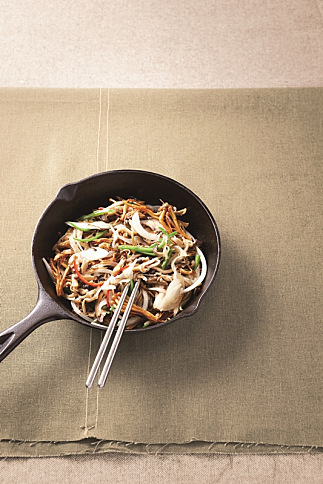

케어밀

버섯잡채
버섯에 들어 있는 레티난 성분은 천연 방어 물질인 인터페론을 만들어 암세포의 활동을 억제하는 효과가 있다.
암 억제 기능 외에도 혈중 콜레스테롤을 떨어뜨리고 동맥경화를 억제하는 건강 재료가 바로 버섯이다.
국이나 찌개의 재료로 사용해 평소 자주 먹는 것이 좋지만, 버섯잡채처럼 다양한 종류의 버섯을 함께 즐길 수 있는 요리를 준비하면 더 맛있게 즐길 수 있다.
재료
새송이버섯 2개, 표고버섯 5장, 느타리버섯 1컵, 황금팽이버섯 1봉지, 양파 ½개, 풋고추 1개, 붉은 고추 1개, 고추기름 · 굴소스 · 소금 · 후춧가루 약간, 버섯밑간양념(간장 1½큰술, 다진 마늘 1작은술, 참기름 1큰술, 후춧가루 약간)
만드는 법
- 표고버섯은 미지근한 물에 불려 포를 떠 가늘게 채 썬다.
- 느타리버섯은 끓는 물에 데친 후 가늘게 찢어놓는다.
- 새송이버섯은 모양대로 가늘게 썰고, 양파는 가늘게 채 썬다.
- 황금팽이버섯은 밑동을 자르고 손으로 찢어놓는다.
- 풋고추와 붉은 고추는 채 썰어 씨를 떨어낸다.
- 표고버섯과 느타리버섯은 분량의 양념을 넣어 10분간 밑간해둔다.
- 팬에 고추기름을 두르고 양파를 센 불에서 재빨리 볶아낸다. 볶으면서 소금과 후춧가루로 간을 한다. 볶아낸 양파는 그릇에 넓게 펼쳐놓는다.
- 팬에 기름을 두르고 밑간한 표고버섯과 느타리버섯을 재빨리 볶은 다음 그릇에 펼쳐 수분이 생기지 않게 한다.
- 팬에 기름을 두르고 새송이버섯과 황금팽이버섯을 볶다가 표고버섯과 느타리버섯, 썰어둔 풋고추와 붉은 고추를 넣고 다시 한 번 볶아준다. 마지막에 굴소스를 넣고 볶은 후 재빨리 그릇에 담아낸다.
우엉영양밥과 달래양념장